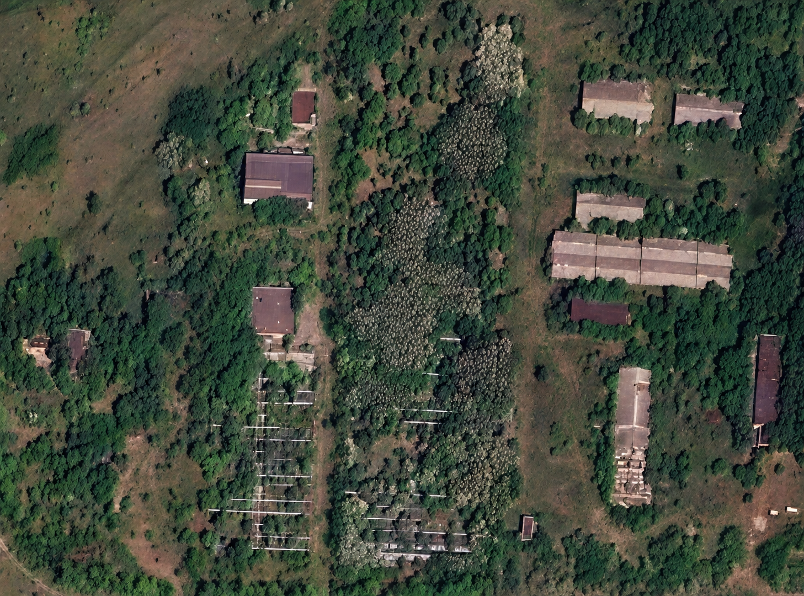

СИГНАЛ УСТОЙЧИВ
--:--:-- ТЕРРИТОРИЯ ИГРЫ / СХЕМА ОБЪЕКТОВ
СЕКТОР 01
ЗНАЙ МЕСТНОСТЬ.
ВЫБИРАЙ СВОЙ ПУТЬ.
ВЫБИРАЙ СВОЙ ПУТЬ.


100%
ПЕРЕТАСКИВАЙ КАРТУ · КОЛЕСО — МАСШТАБДВИГАЙ КАРТУ · НАЖМИ НА МЕТКУ
Нет связи с изображением карты.
Обнови страницу, чтобы повторить загрузку.
Обнови страницу, чтобы повторить загрузку.